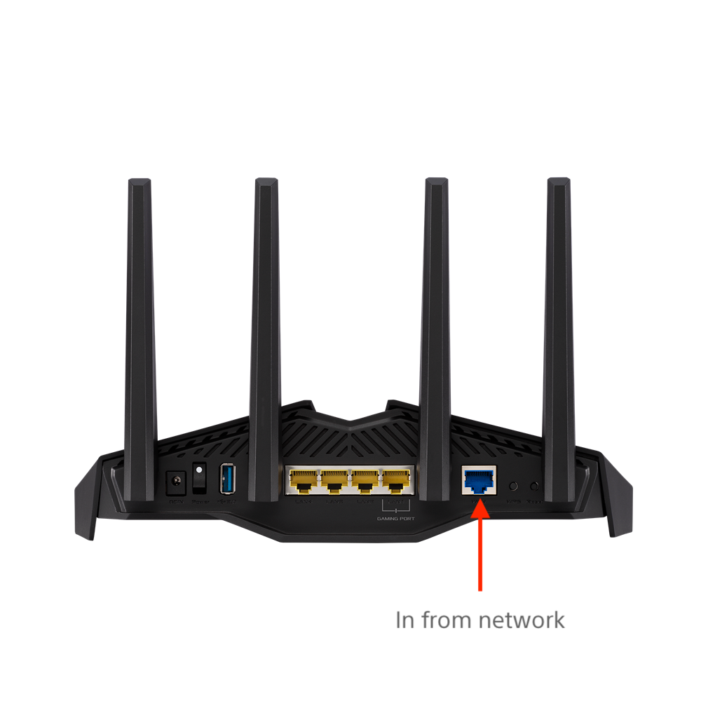

Network setup
If directed by Sony, connect the supplied router between the site’s network connection and the Ethernet switch. Otherwise, start with Step 2.
Connect an Ethernet cable from the site network to the blue input port on the supplied router.
Warning
Please note that OpenVPN is configured on the router to provide access to the Jetson Xavier NX computers through the site’s Internet connection. Only the supplied Live XR hardware should be connected to the supplied OpenVPN router and Ethernet switch.
Note
If Sony technicians request you to modify any networking settings, router access is available from http://router.asus.com/Main_Login.asp using the username
NAPE_LXR_NETand the passwordM33tT#3J3t$on$when prompted.Connect an Ethernet cable to one of the yellow output ports on the supplied router.
Connect an Ethernet cable from the site network connection (or from the yellow output port of the supplied router if it is installed) to the LINK/ACT port on the switch:
Using the supplied Ethernet cables, connect each Jetson Xavier NX to the switch. The provided cable lengths should allow you to route cables around the capture area and avoid tripping hazards.
Next, you’ll need to calibrate the cameras. For information, please see Calibration.
{kind=link}
{kind=link}
{kind=link}
{kind=link}